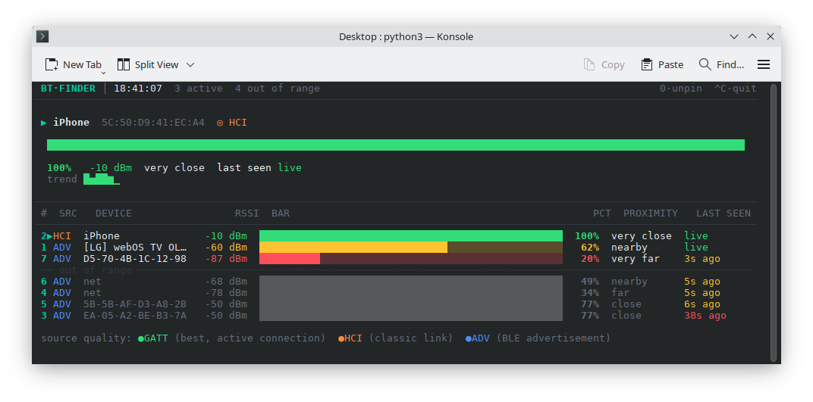

Building a Bluetooth Device Finder with Claude
As I continued experimenting with AI-assisted programming, I decided to see how far I could get by describing an application to Claude rather than writing all of the code myself. This became my first real experiment with what has come to be called vibe coding.
I wanted to build something practical but relatively simple: a utility that could scan for Bluetooth devices around my laptop and show me how strong their signals were.
I used Claude to create a python script that scans for Bluetooth devices within range of my laptop. The application displays the devices it discovers along with their approximate signal strength, measured in dBm.

The signal-strength information made the project more interesting than simply displaying a list of devices. It allowed me to experiment with the idea of using Bluetooth signal strength as an indication of relative distance.
Instead of starting with an existing application and modifying it, I described what I wanted to accomplish and used Claude to generate the code. I then ran the program, observed what worked and what didn't, and went back to Claude with additional instructions when changes were needed.
This was an important shift in how I thought about programming. I didn't need to know every line of code before beginning the project. I could concentrate on describing the desired behavior, testing the result, and understanding enough of the generated code to guide the next iteration.
My first thought was to build the application using HTML and JavaScript. A web application seemed like the most versatile approach. If I could make it work in a browser, other people could potentially open the page and try the Bluetooth finder without installing anything.
Claude created an initial version using the Web Bluetooth API. The concept looked promising, but the limitations of the browser environment quickly became apparent.
The web version wasn't discovering all of the Bluetooth devices that I knew were nearby. It was also attempting to use GATT services to communicate with devices after discovering them.
Polling devices through GATT caused some devices to drop off the scan. What looked like a simple Bluetooth discovery problem was turning into a problem involving how the browser was interacting with the devices.
I learned that a web application simply doesn't have the same privileges as a program running directly on the operating system. The Web Bluetooth API deliberately exposes only a limited subset of Bluetooth functionality.
The experiment also introduced me to another complication: browser implementations aren't necessarily identical.
I installed Chrome and enabled experimental web platform features in an attempt to get access to additional Bluetooth functionality. Eventually I could see Bluetooth devices being detected, but I still couldn't get the application to reliably measure the signal strength I needed.
At this point, I abandoned the browser version and moved the project directly into the Linux terminal.
The next goal was to create a standalone Linux application rather than something dependent on browser APIs.
I also wanted to avoid requiring a collection of Python packages or other dependencies that might not be available on different Linux distributions.
Claude suggested communicating directly with BlueZ, Linux's Bluetooth protocol stack, through D-Bus using Python.
This approach made much more sense. Instead of asking a browser for access to Bluetooth hardware, the application could communicate directly with the operating system's Bluetooth subsystem.
The Linux version was considerably more capable. It could discover BLE devices and retrieve their RSSI values.
However, another problem appeared. The program was polling for information approximately every two seconds. Eventually the application would hang.
This became another useful lesson in AI-assisted programming. Claude could produce a working implementation very quickly, but the first implementation wasn't necessarily the correct architecture for a continuously running application.
Getting an AI-generated program to work once is very different from building a reliable application that can run continuously. Testing, observing failures, and understanding why something hangs are still critical parts of software development.
Once I had something that appeared to be working, I tackled another problem: the interface was terrible.
I began suggesting changes to Claude to make the information easier to understand and requested the ability to focus on a single Bluetooth signal.
This became one of the most useful aspects of the project. Instead of writing every interface component myself, I could describe what I wanted the program to do and have Claude implement the changes. I could then test the result and provide another round of instructions.
As I experimented with the program, I discovered that simply detecting Bluetooth signals isn't as straightforward as I originally assumed.
BLE devices don't necessarily advertise their presence continuously. The advertising interval can vary significantly depending on the manufacturer and the purpose of the device.
Some devices advertise relatively frequently, while others may only transmit an advertisement intermittently. This has a major impact on how quickly a signal-tracking application can respond.
I also learned that connected devices can stop advertising altogether. That means a device that is physically nearby may not necessarily appear in a scan at the moment I expect it to.
| Device Type | What I Learned |
|---|---|
| BLE Devices | Use low-power advertising packets and can advertise at manufacturer-defined intervals. |
| iPhones | Can advertise relatively infrequently, limiting how quickly their signal can be tracked. Apple also uses randomized Bluetooth addresses for privacy. |
| Connected Devices | May stop advertising when they establish a connection, making continuous tracking more difficult. |
| iBeacons & Asset Tags | Are specifically designed for locating and can advertise much more frequently, making them better suited to this type of application. |
| Classic Bluetooth | Works differently from BLE and uses inquiry scanning rather than the same type of continuous low-energy advertising. |
The whole purpose of the project was to use RSSI to help locate a Bluetooth transmitter. RSSI is expressed in dBm and provides an indication of received signal strength.
In theory, moving closer to a transmitter should result in a stronger signal and moving farther away should result in a weaker signal.
In practice, the situation is considerably messier. Advertising intervals, environmental interference, reflections, antenna characteristics, device orientation, and other factors can all affect the measurements.
The project therefore became less about simply displaying a number and more about understanding what that number actually meant.
This project was my first substantial experiment with having an AI build a program from a description rather than writing the entire application myself.
One of the biggest lessons was that vibe coding doesn't eliminate the need to understand technology. In fact, the more unusual the project, the more important it becomes to understand the environment in which the generated code operates.
Claude could quickly write code for Web Bluetooth, BlueZ, D-Bus, scanning, polling, and user interfaces. But I still had to discover whether those approaches made sense, test them against real hardware, recognize when something wasn't working, and explain what I wanted changed.
The project taught me that vibe coding is less about replacing programming knowledge and more about changing how that knowledge is applied. Instead of manually implementing every detail, I could concentrate more on defining the problem, testing solutions, and making architectural decisions.
The project gave me a practical introduction to AI-assisted software development. I saw firsthand how quickly an idea could be turned into a functioning program when an LLM was able to handle much of the initial implementation.
At the same time, the experience reinforced that generating code is only part of software development. Running the application, identifying problems, explaining what needed to change, and deciding whether the result actually behaved as intended were still important parts of the process.
My previous programming experience was particularly useful here. Even when Claude produced code for me, having some understanding of programming made it easier to evaluate what it was doing and communicate what I wanted changed.
This small Bluetooth utility was a simple project, but it represented an important milestone in my exploration of AI. I had moved from using AI primarily as a creative tool to using it as a collaborator in software development.
What started as a relatively simple idea — "find Bluetooth devices and show me their signal strength" — turned into an unexpectedly deep exploration of browser security, Linux Bluetooth architecture, BlueZ, D-Bus, BLE advertising, RSSI, privacy features, and AI-assisted programming.
What interested me most was the reduction in the distance between having an idea and actually building it. Instead of spending hours figuring out how to implement every component from scratch, I could describe the problem, work with Claude to create a solution, test it, and iterate.
The Bluetooth Finder was my first experiment with this approach, and it opened the door to exploring what else could be built by combining traditional programming knowledge with increasingly capable AI coding assistants.